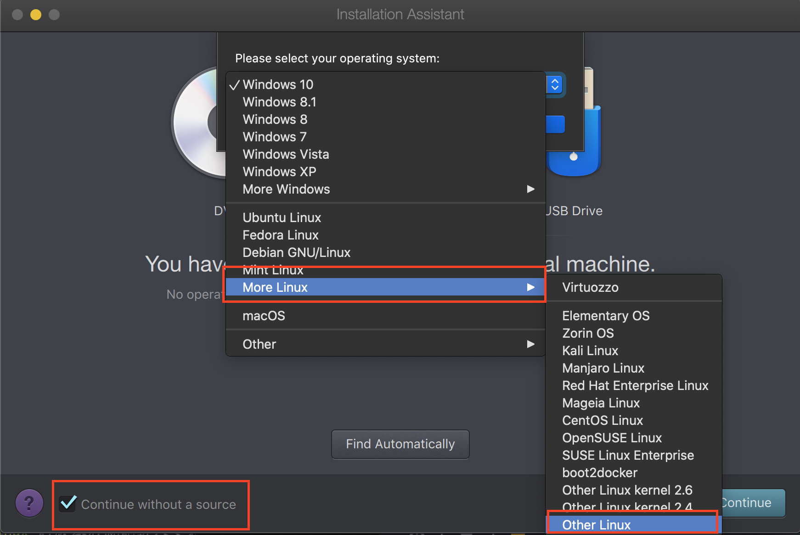
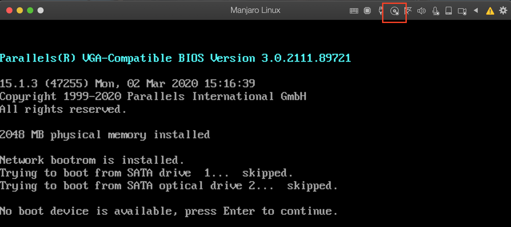
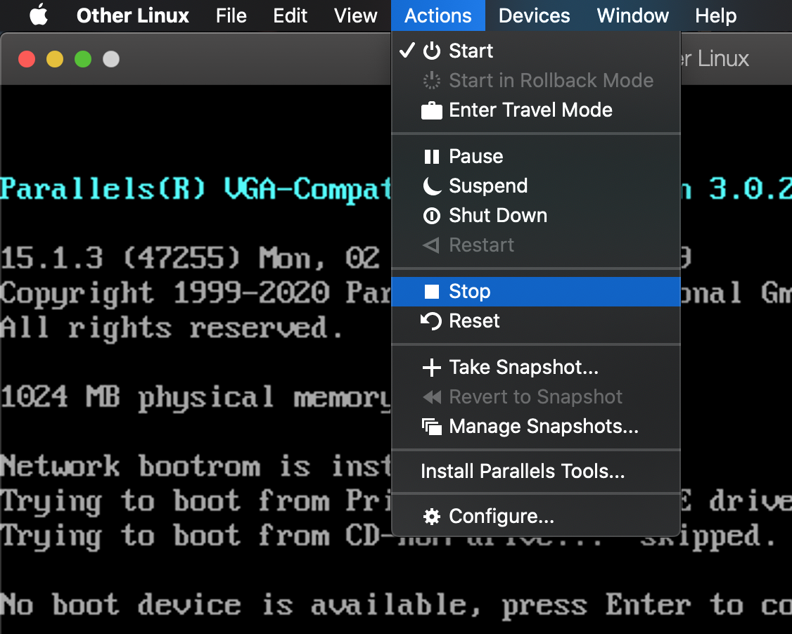
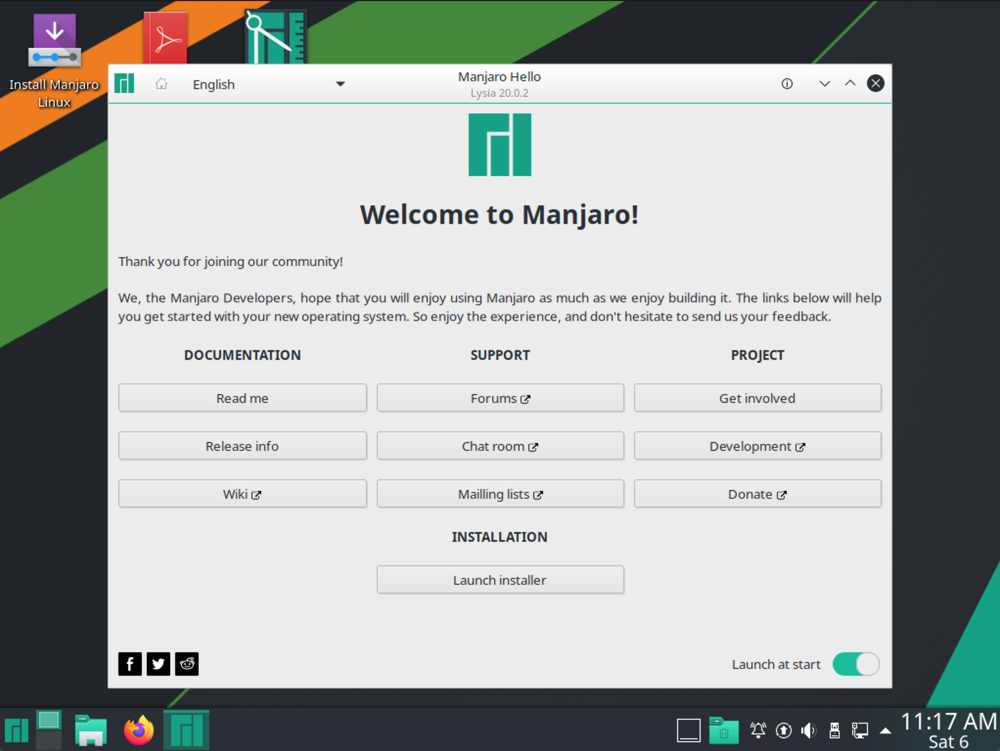
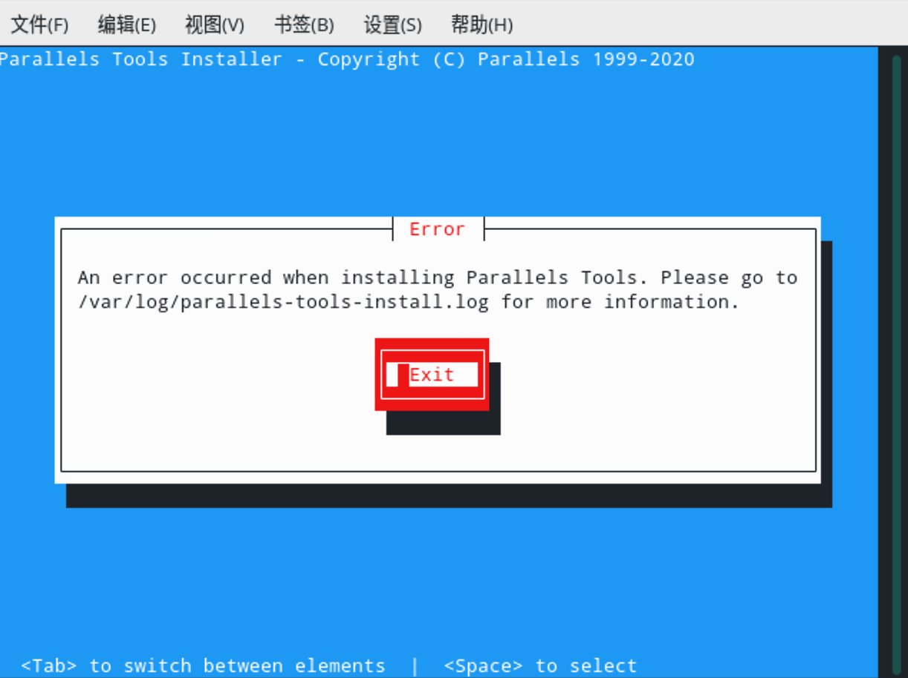
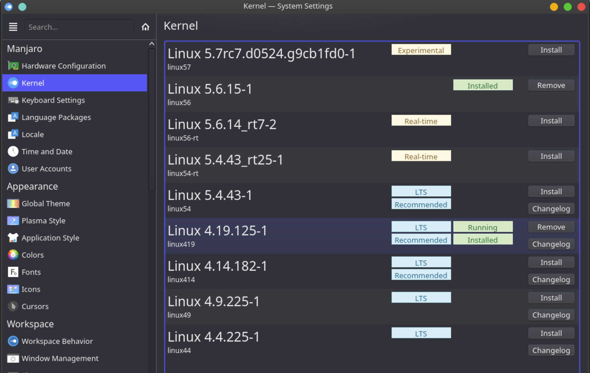
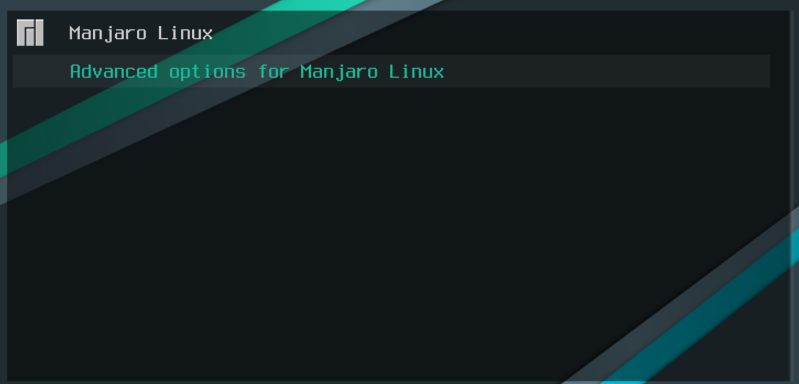
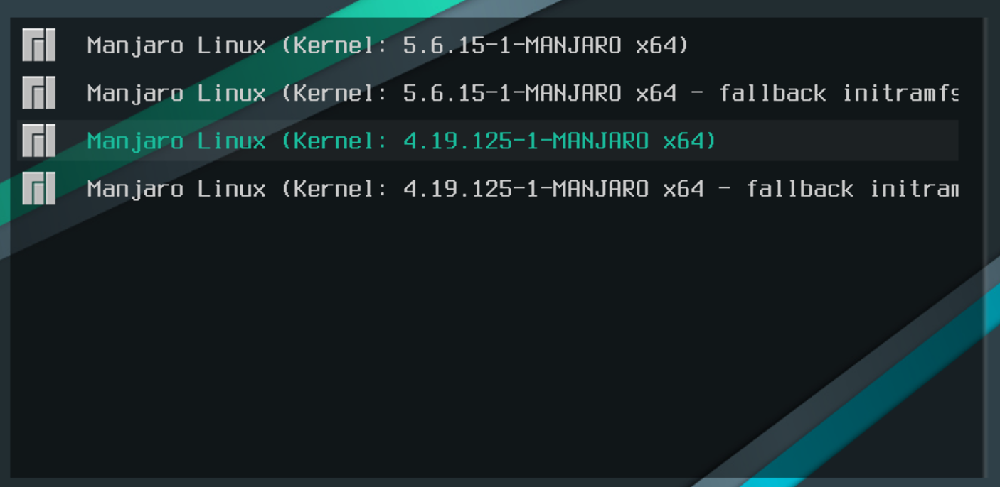

Parallels Desktop 安装 Manjaro 无法进入安装界面的解决办法
文章目录
前言
自从使用 Manjaro 19 开始，在 Parallels Desktop 中安装 Manjaro 发行版的时候，要不就卡在启动页面进不去安装页面，要不就是在安装 Parallels Tools 后卡在启动页面，折腾了许久，翻遍了各个论坛和帖子都没有找到解决方案，于是我有两种选择，一种是使用其他发行版(对我试了其他发行版)，另一种是用其它虚拟机软件(Virtual Box)。
其它发行版可以在 Parallels Tools 中安装成功，也能正常使用，但是用起来却没有 Manjaro 方便，尤其是安装软件，跟 Manjaro 没法比，不是一个量级的，在 Manjaro 下面只要用一条指令就能安装字体、 Emacs 等软件，其它发行版就需要自己下载字体，自己编译啥的，太浪费时间了。
在其它发行版使用不舒服的情况下，我只能选择在 Virtual Box 下安装 Manjaro 。但是在 Virtual Box 下使用也麻烦，如果想同时连本机和连上互联网需要安装两块网卡，这也折腾了好久。还有一个问题就是屏幕分辨率的问题，也折腾了好久。有这么多麻烦，于是我又折腾回 Parallels Tools 了。
经过这么一折腾找到了解决办法，于是记录一下，其他人碰到了也方便借鉴，少走弯路。
无法进入安装界面
在创建好虚拟机后，启动后稍等一会就回来到如下界面，一直卡在此处，无法进入安装界面。

图中有一处 FAILED 写到 Failed to start Simple Desktop Display Manager ，一开始我以为是 sddm 的问题。于是我又换成 xface 的，因为 xface 使用的是 lightdm ，但是得到的结果差不多。
之后我又试了 Gnome 、 i3 、 cinnamon 的桌面环境，但是结局都一样，都卡在这个地方，无法进入安装界面。
这时候基本上所有的桌面环境都试过了，没有一个可以，于是我想找 DDE 桌面环境的，但是发现官方已经不支持了，只能自己用 Arch Linux 安装，幸运的是 Arch Linux 是有 DDE 的版本 archdeepin 。于是我就下载了，进行尝试。
在尝试之前我之前用 Arch 装过 i3 和 dwm 的桌面环境，都是可用的。于是我想 Arch 和 Manjaro 是同宗同源，既然 Arch 都可以，为什么 Manjaro 不可以，于是在安装虚拟机的时候，我不再让系统自动检测发行版，而是自己手动指定为 Other Linux ，果然奇迹发生了，居然进入安装界面了。
解决无法进入安装界面
上面说到手动指定 Linux 的版本后就能进入安装界面，接下来，来实操一下。
创建虚拟机执行到如下界面的时候，左下角 Continue without a source 的复选框给勾上，操作系统选择 More Linux -> Other Linux 。

由于我们之前没有选择镜像，所以会来到如下界面，在这里我们需要点击图中红色方框框出来的，为其选择 Manjaro 的安装光盘。

然后在菜单栏中选择 Actions -> Stop ，关机之后，再次启动。

这样就能进入到安装界面了，这个过程有点久，需要耐心等待一会。 
Parallels Tools 安装失败
安装好 Manjaro 之后，还需要安装 Parallels Tools ，这样才能让显示效果达到满意，字体渲染才能看，鼠标移动顺畅，不会有卡顿感，屏幕可以自动缩放。
Parallels Tools 有这么多好处，让我不得不装，但是直接安装会碰到如下错误。

图中让我们到 /var/log/parallels-tools-install.log 看日志，如下所示
|
|
一堆乱七八糟的，就是内核构建失败了，这让我想起了之前安装 openSUSE 的时候因为内核的问题安装失败了，于是我就尝试把内核的版本降到 4.x 结果还真成功了。
解决 Parallels Tools 安装失败
方法一
打开 System Settings 选择 kernel 找到 4.x 版本的内核，点击安装。

方法二
通过命令行安装，这种情况下也适用于启动之后进黑屏，无法显示桌面。
|
|
上面的方法安装完之后重启，按下 F8 选择高级选项

在接下来的界面选择 4.x 版本的内核，这里是 4.19

进入桌面之后，重新安装 Parallels Tools 就能成功了。
总结
通过上面的操作就能解决 Manjaro 在 Parallels Desktop 中无法安装，以及 Parallels Tools 安装失败的问题，这样就能很好的玩耍了。